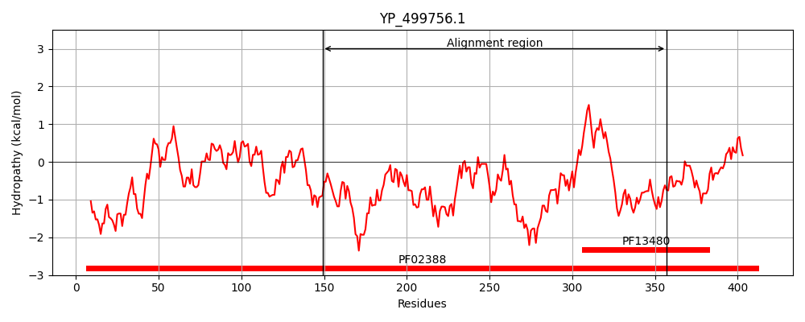
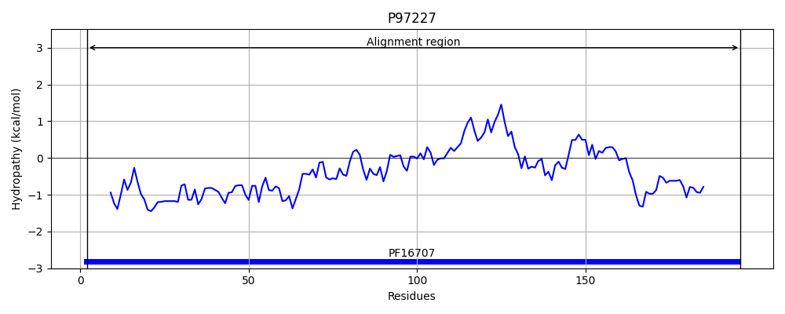
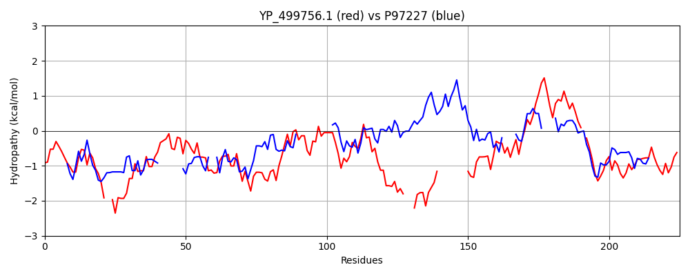

Hit Accession: P97227
Hit TCID: 3.A.7.12.1
Hit Description: gnl|BL_ORD_ID|11769 gnl|TC-DB|P97227|3.A.7.12.1 CAG pathogenicity island protein 13 - Helicobacter pylori (Campylobacter pylori).
Mach Len: 225
e:0.000561
Query TMS Count : 0
Hit TMS Count: 0
TMS-Overlap Score: 0.000000
Predicted Substrates:None
BLAST Alignment:
Score: 93 , Bit scores: 40 bits, E-value: 5.6e-04, Alignment length: 225, Percentage identity: 24
Query: 149 SNKSQIRWISVLDLKDKDENQL--LKEMEYQTRRNIKKTIEIGVKVEDLSIEETNRFYKLFQMAEEKHGFHFMNEDYFKRMQEIYKDKAMLKIACINLNEYQDKLKIQLLKIENEMMTVNRALNENPN---SKKNKSKLN----------QLNMQLSSINNRISKTEELIFEDGPVLDLAAALFICTDDEV-YYLSSGSNPKYNQYMGAYHLQWHMIKYAKSHNI 357
SN + + + D KDK E + L+E E + KK I+ I+ + F+K QM K + +Y K + + K + DK K +E+E M + A+ ENPN SK ++S L M + ++++I EL P+L LF+ TD+E+ +Y + + +YN Y+ +++ + KY K +
Sbjct: 2 SNNMRKLFSMIADSKDKKEKLIESLQENELLSTDEKKKIID--------QIKTMHDFFK--QMHTNKGALDKVLRNYMKDYRAVIKSIGV------------DKFKKVYRLLESETMELLHAIAENPNFLFSKFDRSILGIFLPFFSKPIMFKMSIREMDSQI----ELYGTKLPLL----KLFVMTDEEMNFYANLKTIEQYNDYVRDLLMKFDLEKYMKEKGV 196 | Protein Hydropathy Plots: |
|---|
|  |  |
Pairwise Alignment-Hydropathy Plot:
|
|---|
|  |